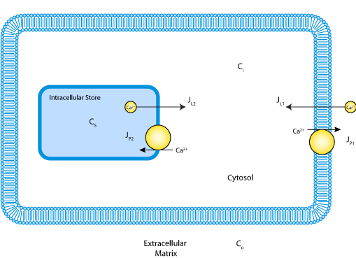

This CellML model runs in OpenCell and COR, and reproduces Figure 4 from the original paper. The results match output from a reference (IgorPro) implementation of the model provided by David Friel.
ABSTRACT: [Ca2+]i oscillations have been described in a variety of cells. This study focuses on caffeine-induced [Ca2+]i oscillations in sympathetic neurons. Previous work has shown that these oscillations require Ca2+ entry from the extracellular medium and Ca(2+)-induced Ca2+ release from a caffeine- and ryanodine-sensitive store. The aim of the study was to understand the mechanism responsible for the oscillations. As a starting point, [Ca2+]i relaxations were examined after membrane depolarization and exposure to caffeine. For both stimuli, post-stimulus relaxations could be described by the sum of two decaying exponential functions, consistent with a one-pool system in which Ca2+ transport between compartments is regulated by linear Ca2+ pumps and leaks. After modifying the store to include a [Ca2+]i-sensitive leak, the model also exhibits oscillations such as those observed experimentally. The model was tested by comparing measured and predicted net Ca2+ fluxes during the oscillatory cycle. Three independent fluxes were measured, describing the rates of 1) Ca2+ entry across the plasma membrane, 2) Ca2+ release by the internal store, and 3) Ca2+ extrusion across the plasma membrane and uptake by the internal store. Starting with estimates of the model parameters deduced from post-stimulus relaxations and the rapid upstroke, a set of parameter values was found that provides a good description of [Ca2+]i throughout the oscillatory cycle. With the same parameter values, there was also good agreement between the measured and simulated net fluxes. Thus, a one-pool model with a single [Ca2+]i-sensitive Ca2+ permeability is adequate to account for many of the quantitative properties of steady-state [Ca2+]i oscillations in sympathetic neurons. Inactivation of the intracellular Ca2+ permeability, cooperative nonlinear Ca2+ uptake and extrusion mechanisms, and functional links between plasma membrane Ca2+ transport and the internal store are not required.
The original paper reference is cited below:
[Ca2+]i oscillations in sympathetic neurons: an experimental test of a theoretical model, David D. Friel, 1995, Biophysical Journal, 68, 1752-1766. PubMed ID: 7612818
|  |
| Schematic of the model indicating Ca2+ compartmentalization in the extracellular matrix, cytosol and the mitochondrial matrix and pathways for Ca2+ ion movement between the compartments. |